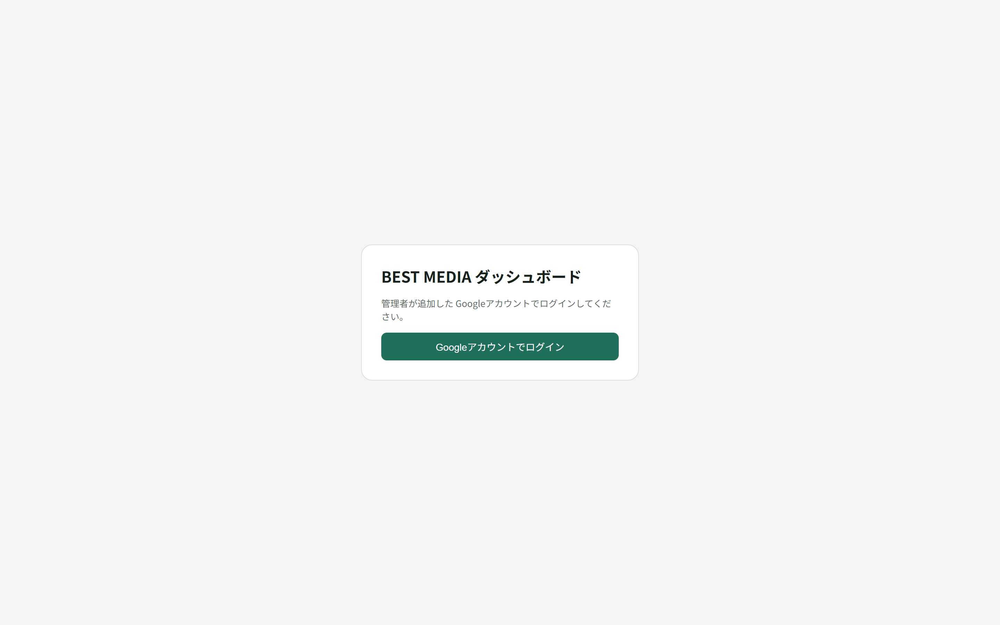
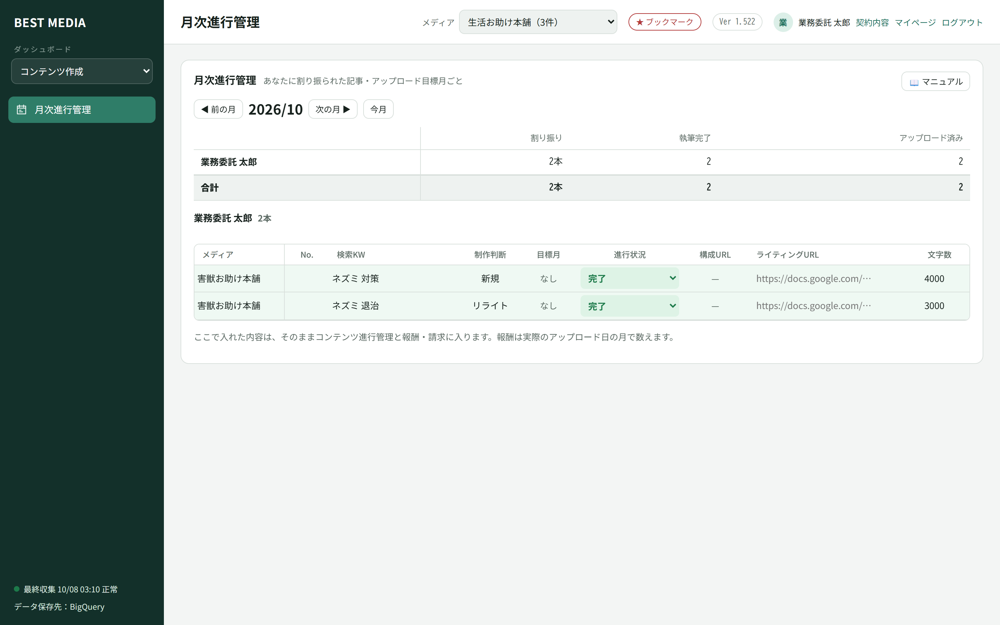
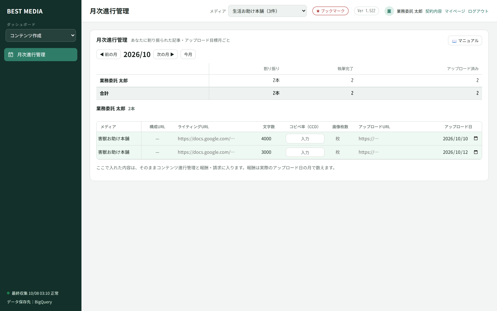
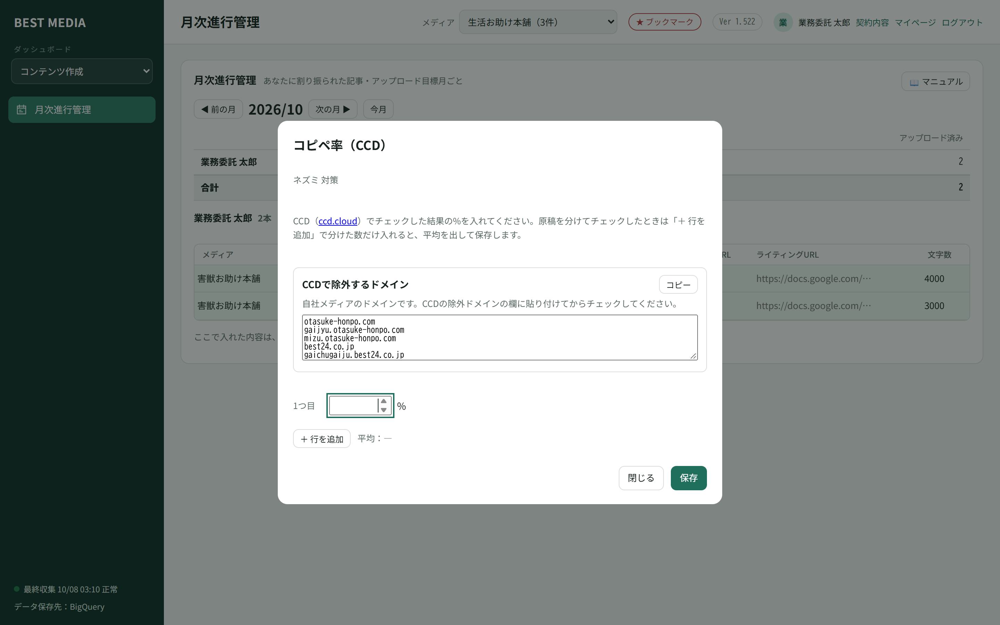
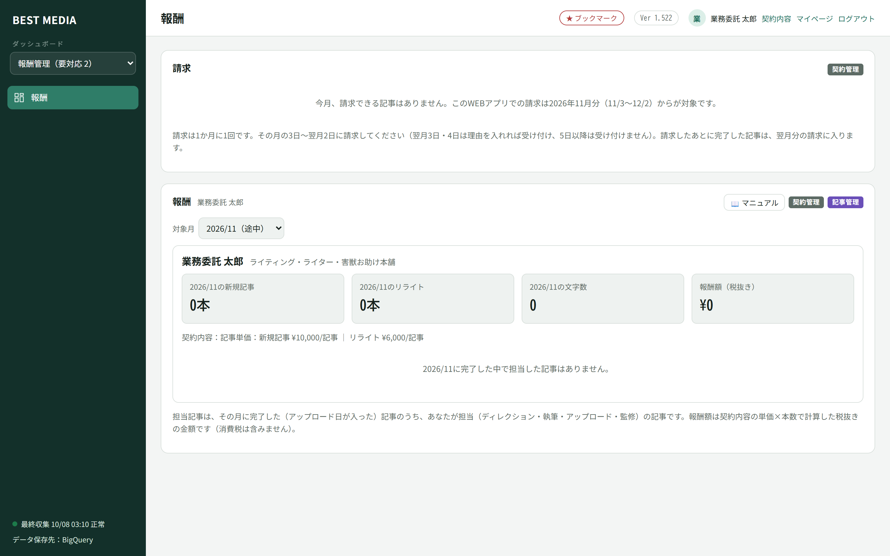

※ このガイドの画面はテスト用のデータです。実際の画面では、あなたの担当の記事が表示されます。
※ 画面の「マニュアル」ボタンから、くわしい説明も読めます。

1別のGoogleアカウントでログインすると「権限がありません」と出ます。その場合は一度ログアウトして、ご案内したアカウントでログインし直してください。

12345入力するとすぐ保存されます（保存ボタンはありません）。
構成URLの「構成を開く」から、記事の構成（設計図）を確認できます。表は横に長いので、右側は横にスクロールして見ます（次のページ）。

12345ライターが直せるのは、ライティングURL・文字数・コピペ率（CCD）・画像枚数・進行状況・アップロードURL・アップロード日です。担当者や目標月などは、ディレクション担当にご連絡ください。
文字数を自動で入れるには、原稿のGoogleドキュメントをダッシュボード用のアカウント（読めないときの案内に出るアドレス）に「閲覧者」で共有してください。

1234| 進行状況を変える | 「進行状況」のプルダウンで今の段階を選ぶと、その時点で保存されます。 |
|---|---|
| 進められないとき | 必要な項目が足りないと「『〇〇』にできません」と出て、足りない項目が表示されます。 ・「記事執筆完了」より先にするには、ライティングURLが必要です。 ・「完了」にするには、コピペ率（CCD）も必要です。 ・担当者・構成URLなど、ディレクション担当が入れる項目が足りないときは、ディレクション担当に入力をお願いしてください。 |
| 公開したら | 「アップロードURL」に公開した記事のURL（http:// か https:// で始まるもの）、「アップロード日」に公開した日を入れます。 |
| 報酬に入る月 | 報酬・請求は、実際のアップロード日の月で数えます。目標月とアップロード日の月がずれた記事は、アップロード日の月の報酬に入ります。 |

請求の状態は「請求確認中 → 経理部確認中 → 請求完了」と進みます。差し戻しになったときは、理由を確かめて直してから出し直してください。
| ログインできない | ご案内したメールアドレスの Googleアカウントでログインしているか確かめてください。それでも入れないときは、ディレクション担当にご連絡ください。 |
|---|---|
| 割り振られた記事が出ない | 月を切り替えて確かめてください。それでも出ないときは、執筆担当やアップロード目標月が入っていない可能性があります。ディレクション担当にご連絡ください。 |
| 「保存できませんでした」と出る | ライティングURLは https://docs.google.com/… 、アップロードURLは http:// か https:// で始まっているか確かめてください。 |
| 使い方がわからない | 画面の「マニュアル」ボタンから、くわしい説明を読めます。 |
※ 画面はよりよくするために少しずつ変わります。最新の画面と違うところがあれば、画面の表示を優先してください。